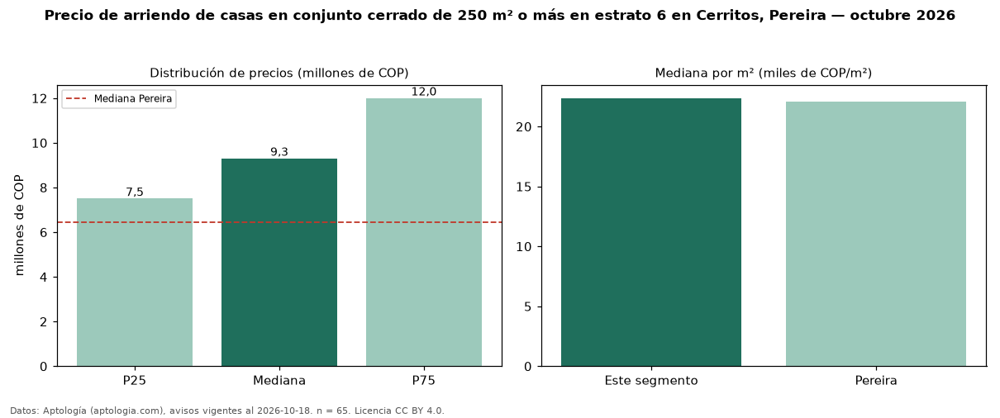

Precio de arriendo de casas en conjunto cerrado de 250 m² o más en estrato 6 en Cerritos, Pereira — octubre 2026
COP 9,30 millones al mes es el canon mediano de casas en conjunto cerrado de 250 m² o más en estrato 6 en arriendo en Cerritos, Pereira (n = 65 avisos). Frente a la mediana de las casas en conjunto cerrado en estrato 6 en arriendo de Cerritos (COP 8,00 millones, n = 93), queda 16 % por encima; este segmento reúne el 70 % de esos avisos. Por metro cuadrado, la mediana es COP 22.368/m² al mes (n = 63), 10 % por debajo de las casas en conjunto cerrado en estrato 6 en arriendo de Cerritos (COP 24.737/m²). El área mediana anunciada es 450 m². El segmento con más oferta es el de 3 o más habitaciones (62 avisos, mediana COP 9,30 millones). La administración mediana declarada es COP 685.000 al mes (n = 30), aparte del canon. La mediana de todas las casas en arriendo de Pereira es COP 6,46 millones (+44 % de diferencia). La mitad central de los avisos va de COP 7,50 millones a COP 12 millones (razón 1,6), una dispersión moderada. Datos: Aptología (aptologia.com), CC BY 4.0 — https://www.aptologia.com/casas-en-arriendo/pereira/cerritos. Archivos: PDF, CSV con las cifras y gráfica PNG.

| Avisos únicos | 65 |
|---|---|
| Percentil 25 | COP 7.500.000 |
| Mediana | COP 9.300.000 |
| Percentil 75 | COP 12.000.000 |
| Mediana por m² | COP 22.368 |
Fuente: avisos vigentes de portales inmobiliarios recopilados por Aptología, deduplicados (mínimo 30 avisos únicos por celda). Precios pedidos, no cerrados. Fecha: 2026-10-18.